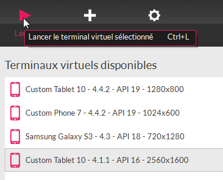
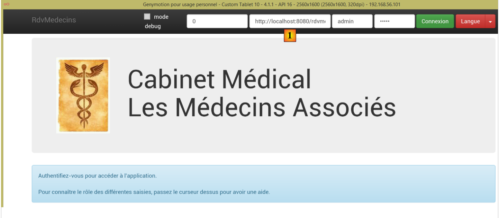
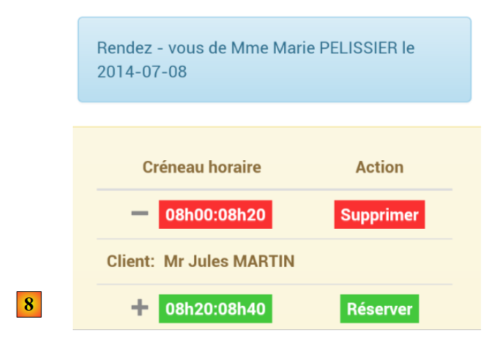

4. Running the application
We now want to run the application outside of the STS IDE (for the server) and WebStorm (for the client).
4.1. Deploying the web service on a Tomcat server
We saw in Section 2.11.9 how to create a WAR archive for Tomcat. We repeat the process here. First, to preserve the existing structure, we duplicate the Eclipse project [rdvmedecins-webapi-v3] into [rdvmedecins-webapi-v4].
 |
The [pom.xml] file is modified as follows:
<modelVersion>4.0.0</modelVersion>
<groupId>istia.st.spring4.mvc</groupId>
<artifactId>rdvmedecins-webapi-v4</artifactId>
<version>0.0.1-SNAPSHOT</version>
<packaging>war</packaging>
<name>rdvmedecins-webapi-v3</name>
<description>Doctor Appointment Management</description>
<parent>
<groupId>org.springframework.boot</groupId>
<artifactId>spring-boot-starter-parent</artifactId>
<version>1.0.0.RELEASE</version>
</parent>
<dependencies>
<dependency>
<groupId>org.springframework.boot</groupId>
<artifactId>spring-boot-starter-web</artifactId>
</dependency>
<dependency>
<groupId>org.springframework.boot</groupId>
<artifactId>spring-boot-starter-security</artifactId>
</dependency>
<dependency>
<groupId>org.springframework.boot</groupId>
<artifactId>spring-boot-starter-tomcat</artifactId>
<scope>provided</scope>
</dependency>
<dependency>
<groupId>istia.st.spring4.rdvmedecins</groupId>
<artifactId>rdvmedecins-metier-dao-v2</artifactId>
<version>0.0.1-SNAPSHOT</version>
</dependency>
</dependencies>
Changes need to be made in two places:
- line 5: you must specify that you are going to generate a WAR (Web ARchive) file;
- lines 23–27: you must add a dependency on the [spring-boot-starter-tomcat] artifact. This artifact includes all Tomcat classes in the project’s dependencies;
- line 26: this artifact is [provided], meaning that the corresponding files will not be included in the generated WAR. Instead, these files will be located on the Tomcat server where the application will run;
You must also configure the web application. In the absence of a [web.xml] file, this is done using a class that extends [SpringBootServletInitializer]:
 |
The [ApplicationInitializer] class is as follows:
package rdvmedecins.web.config;
import org.springframework.boot.builder.SpringApplicationBuilder;
import org.springframework.boot.context.web.SpringBootServletInitializer;
public class ApplicationInitializer extends SpringBootServletInitializer {
@Override
protected SpringApplicationBuilder configure(SpringApplicationBuilder application) {
return application.sources(AppConfig.class);
}
}
- line 6: the [ApplicationInitializer] class extends the [SpringBootServletInitializer] class;
- line 8: the [configure] method is overridden (line 7);
- line 9: the [AppConfig] class is provided to configure the project;
Once this is done, you may need to update the Maven project (I had to do this): [right-click on the project / Maven / Update project] or [Alt-F5].
To run the project, proceed as follows:
 |
- in [1], run the project on one of the servers registered in the Eclipse IDE;
- In [2], select [tc Server Developer], which is the default option. This is a variant of Tomcat;
You get the following result:
 |
This is normal. Remember that the web service does not have the URL [/] in its methods. When you try the URL [/getAllMedecins], you get the following response:
 |
This is normal. The web service is protected.
Now let’s launch the client [rdvmedecins-angular-v2] in WebStorm:
 |
In [1], enter the URL of the new web service [http://localhost:8080/rdvmedecins-webapi-v4]. We get the following result:

To run the application outside the STS IDE, there are various solutions. Here is one.
Download a version of Tomcat [http://tomcat.apache.org/download-80.cgi] (July 2014):
 |
Select a zipped version in [1] and unzip it in [2]. Return to STS:
 |
- In the [Servers] tab, right-click on the [rdvmedecins-webapi-v4] application and select the [Browse Deployment Location] option;
- in [4]: copy the [rdvmedecins-webapi-v4] folder;
 |
- in [5], paste the [rdvmedecins-webapi-v4] folder into the Tomcat [webapps] folder;
- In [6], run the [startup.bat] command file (the Tomcat server integrated into STS must be stopped). A DOS window opens to display the Tomcat logs. They should show that the [rdvmedecins-webapi-v4] application has been launched.
To verify this, run the Angular client [rdvmedecins-angular-v2] again in WebStorm:
 |
In [1], enter the URL of the new web service [http://localhost:8080/rdvmedecins-webapi-v4]. You will see the following result:
4.2. Deploying the Angular client on the Tomcat server
Now that the web service has been deployed on Tomcat, we will now deploy the Angular client on a server as well. This could very well be the server that is already hosting the web service. We will take this approach.
First, we duplicate the client [rdvmedecins-angular-v2] into [rdvmedecins-angular-v3] and make the following changes:
 |
- in [1], everything has been moved to a folder named [ app];
- in [1], we removed the [bower-components] folder, which contained the various CSS and JS libraries required for the project. All these elements were copied into the [lib] folder [2];
- in [1], the [app.html] file has been renamed to [index.html];
The [index.html] file was modified to account for the changes in the paths of the resources used:
<!DOCTYPE html>
<html ng-app="rdvmedecins">
<head>
<title>RdvMedecins</title>
...
<!-- CSS -->
...
<link href="lib/bootstrap-theme.min.css" rel="stylesheet"/>
<link href="lib/bootstrap-select.min.css" rel="stylesheet"/>
</head>
<!-- controller [appCtrl], model [app] -->
<body ng-controller="appCtrl">
<div class="container">
...
</div>
<!-- Bootstrap core JavaScript ================================================== -->
<script type="text/javascript" src="lib/jquery.min.js"></script>
<script type="text/javascript" src="lib/bootstrap.min.js"></script>
<script type="text/javascript" src="lib/bootstrap-select.min.js"></script>
<script type="text/javascript" src="lib/footable.js"></script>
<!-- angular js -->
<script type="text/javascript" src="lib/angular.min.js"></script>
<script type="text/javascript" src="lib/ui-bootstrap-tpls.min.js"></script>
<script type="text/javascript" src="lib/angular-route.min.js"></script>
<script type="text/javascript" src="lib/angular-translate.min.js"></script>
<script type="text/javascript" src="lib/angular-base64.min.js"></script>
<!-- modules -->
...
<!-- services -->
...
<!-- directives -->
...
<!-- controllers -->
....
</body>
</html>
Additionally, the [loginCtrl] controller has been modified to point to the correct server so that the user does not have to type the URL:
// credentials
app.serverUrl = "http://localhost:8080/rdvmedecins-webapi-v4";
app.username = "admin";
app.password = "admin";
Now that this is done, let’s run the [index.html] file:
 |  |
Then let’s log in to the web service. It should work. Once verified, let’s stop the Tomcat server. We’ll reuse the built-in STS server.
In STS, copy the entire contents of the [rdvmedecins-angular-v3/app] folder into the [webapp] folder of the [rdvmedecins-webapi-v4] project (Navigator tab) [1]:
 |
Once that’s done, launch [2] the STS VMware server, then request the URL [http://localhost:8080/rdvmedecins-webapi-v4/app/index.html]:
 |
We encounter a permissions issue at [3]. This is not surprising since we have secured the web service. We need to specify that access to the file [/app/index.html] is unrestricted. Let’s return to Eclipse:
 |
Remember that access permissions were defined in the [SecurityConfig] class. Let’s modify it as follows:
@Override
protected void configure(HttpSecurity http) throws Exception {
// CSRF
http.csrf().disable();
// The password is transmitted via the Authorization: Basic xxxx header
http.httpBasic();
// The HTTP OPTIONS method must be allowed for all
http.authorizeRequests() //
.antMatchers(HttpMethod.OPTIONS, "/", "/**").permitAll();
// The [app] directory is accessible to everyone
http.authorizeRequests() //
.antMatchers(HttpMethod.GET, "/app", "/app/**").permitAll();
// only the ADMIN role can use the application
http.authorizeRequests() //
.antMatchers("/", "/**") // all URLs
.hasRole("ADMIN");
}
- Lines 11–12: We grant everyone permission to read the [app] folder and its contents. To do this, we follow the example set by the previous lines.
Now, restart the STS Tomcat server and request the URL [http://localhost:8080/rdvmedecins-webapi-v4/app/index.html] again:

This time, it works.
4.3. CORS Headers
You may recall that we struggled quite a bit to handle CORS headers. In the previous example:
- the web service is at the URL [http://localhost:8080/rdvmedecins-webapi-v4];
- the HTML client is at the URL [http://localhost:8080/rdvmedecins-webapi-v4/app];
The HTML client and the web service are therefore on the same server [http://localhost:8080]. There are no CORS conflicts because these only occur when the client and server are not in the same domain. We should be able to verify this. Let’s go back to STS:
 |
Whether or not CORS headers are generated is controlled by a boolean defined in the [ApplicationModel] class:
// configuration data
private boolean CORSneeded = true;
We set the above boolean to false, restart the web service, and request the URL [http://localhost:8080/rdvmedecins-webapi-v4/app/index.html] again. We can see that the application works.
4.4. Deploying the Angular client on an Android tablet
The [Phonegap] tool [http://phonegap.com/] allows you to generate a mobile executable (Android, iOS, Windows 8, etc.) from an HTML/JS/CSS application. There are different ways to achieve this. We’ll use the simplest one: an online tool available on the Phonegap website [http://build.phonegap.com/apps].
 |
- Before [1], you may need to create an account;
- In [1], get started;
- In [2], choose a free plan that allows only one Phonegap app;
 |
- In [3], download the zipped application [4] (the [app] folder created in section 4.2 is zipped);
 |
- In [5], name the app;
- in [6], build it. This may take 1 minute. Wait until the icons for the various mobile platforms indicate that the build is complete;
 |
- Only the Android [7] and Windows [8] binaries have been generated;
- click on [7] to download the Android binary;
 |
- in [9], the downloaded [apk] binary;
Launch a [GenyMotion] emulator for an Android tablet (see section 6.4):
 |
Above, we launch a tablet emulator with Android API 16. Once the emulator is launched,
- unlock it by dragging the lock (if present) to the side and then releasing it;
- Using the mouse, drag the [PGBuildApp-debug.apk] file you downloaded and drop it onto the emulator. It will then be installed and run;
 |
You need to change the URL to [1]. To do this, in a command prompt window, type the command [ipconfig] (line 1 below), which will display the various IP addresses of your machine:
C:\Users\Serge Tahé>ipconfig
Windows IP Configuration
Wireless Network Adapter Local Area Connection* 15:
Media status. . . . . . . . . . . . : Media disconnected
Connection-specific DNS suffix. . . :
Ethernet adapter Local Area Connection :
Connection-specific DNS suffix. . . : ad.univ-angers.fr
Local link IPv6 address. . . . .: fe80::698b:455a:925:6b13%4
IPv4 address. . . . . . . . . . . . . .: 172.19.81.34
Subnet mask. . . . . . . . . . . . . .: 255.255.0.0
Default gateway. . . . . . . . . : 172.19.0.254
Wi-Fi wireless network adapter:
Media status. . . . . . . . . . . . : Media disconnected
Connection-specific DNS suffix. . . :
...
Note either the Wi-Fi IP address (lines 6–9) or the local network IP address (lines 11–17). Then use this IP address in the web server URL:
 |
Once this is done, connect to the web service:
 |
Test the application on the emulator. It should work. On the server side, you may or may not allow CORS headers in the [ApplicationModel] class:
// configuration data
private boolean CORSneeded = false;
This is irrelevant for the Android app. It does not run in a browser. The CORS header requirement comes from the browser, not the server.
4.5. Deploying the Angular client on an Android smartphone emulator
We repeat the previous step using a smartphone emulator. We want to check how our client behaves on small screens:
 |
- in [1], we launch a smartphone emulator;
- in [2] and [3], the navigation bar has been collapsed into a menu;
 |
- in [4], we log in;
- in [5], the list and calendar are stacked one below the other instead of side by side;
 |
- in [6], we request the calendar;
- in [7], since the screen is too small, part of the time slots is hidden. The [footable] library handled this;
 |
- in [8], the same view as before, but this time with an appointment.
All in all, our app adapts fairly well to the smartphone. It could certainly be better, but it remains usable.